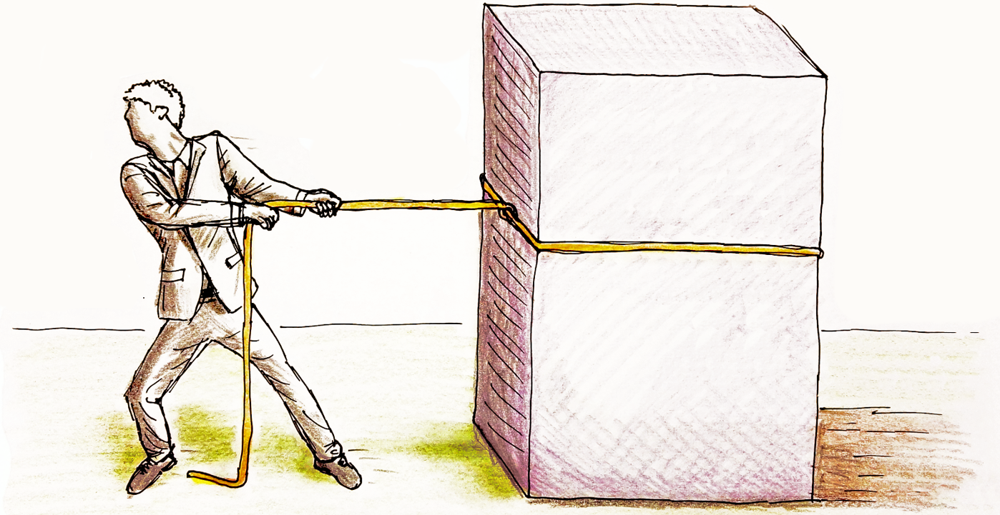

Die Physik von Haft- und Gleitreibung

Generelle Tipps zum Experimentieren
- Denkt daran, nur die Größe zu variieren, die ihr untersuchen wollt ("Variablenkontrolle"!)
- Die Elektroautos ziehen eventuell in eine Richtung besser als in die andere...
- Zur Überwindung der Haftreibung könnt ihr auch Starthilfe geben...
Tipps zu Aufgabe 1
- Wenn der Holzklotz auf der Gummiseite liegt, bewegt er sich nicht direkt, wenn ihr daran zieht.
- Lest die Zugkraft in dem Moment ab, wenn der Klotz anfängt, sich zu bewegen. Das ist der Betrag der Haftreibung.
- Wenn der Klotz mit konstanter Geschwindigkeit gezogen wird, könnt ihr den Betrag der Gleitreibungskraft ablesen.
Tipps zu Aufgabe 2
- Folgende Größen könnte man überprüfen: Flächeninhalt der Kontaktfläche, Zieh-Geschwindigkeit, Gewichtskraft des gezogenen Objekts, Material der Kontaktflächen.
- Überlegt euch, wie man beispielsweise den Flächeninhalt der Kontaktfläche verändern kann, ohne das gezogene Gewicht zu verändern ...
Tipps zu Aufgabe 3
- Die Formel kann durch eine Umformung nach dem Haftreibungskoeffizienten umgestellt werden.
- Bestimmt die Haft- bzw. Gleitreibungskoeffizienten für eure Oberflächen.
- Vergleicht mit den Literaturwerten und beurteilt, ob eure Werte plausibel sind.